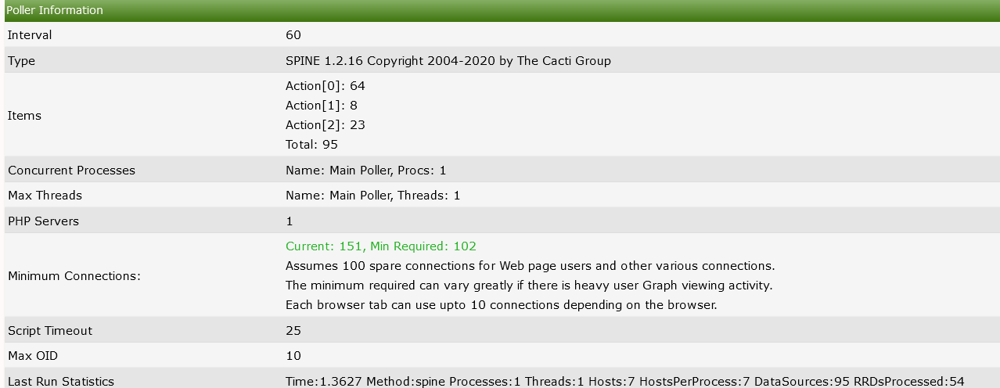

.
.This section will describe System Utilities in Cacti.
The system utilities page in cacti contains tools used for administering cacti from this page you can do the following
Rebuild poller cache.
View technical support information.
Adjust log settings.
View the user log for audits.
.
Some of the most important tools are listed below
The Poller Cache will be re-generated if you select this option. Use this option only in the event of a database crash if you are experiencing issues after the crash and have already run the database repair tools. Alternatively, if you are having problems with a specific Device, simply re-save that Device to rebuild its Poller Cache. There is also a command line interface equivalent to this command that is recommended for large systems. NOTE: On large systems, this command may take several minutes to hours to complete and therefore should not be run from the Cacti UI. You can simply run 'php -q cli/rebuild_poller_cache.php --help' at the command line for more information.
Cacti technical support page. Used by developers and technical support persons to assist with issues in Cacti. Includes checks for common configuration issues. There is also built-in checks that help you tune your Cacti installation.
For example in the technical support section under the summary, you will see a calculation for how many MySQL connections. You should have (Cacti 1.2.16+) you will also show poller information such as the last polling time process count and more detailed info that can be used for a quick view of how the system is configured.
.
You will also see all of the system variables such as allocated php memory as well as mysql variables.

Any Variable appearing in red indicates a subpar setting and should be looked. the recommendations are dynamic in that they change when more system resources are detected so if you upgrade your server hardware be sure to check back to this page to get the most out of your new hardware.
Console > utilities > System Utilities > RRDfile Cleaner
When you delete Data Sources from Cacti, the corresponding RRDfiles are not removed automatically. Use this utility to facilitate the removal of these old files.
In system utilities you can manually start the RRD cleaning procedure You can either archive the selected RRD's to have them deleted in the next polling cycle
RRDfiles can also be schedule to automatically be removed this option can be configured in Console > Configuration > Settings > Paths by selecting the RRDfile autoclean selection.

Console > utilities > System Utilities > RRDfile Checker
The RRDfile checker is a tool that scans all RRDfiles at a scheduled time and tests the stored data:
For very large Cacti installs the RRDfile checker can take quite a long time to complete. You can set number of concurrent parallel processes in Console > Configuration > Settings > Data
With Cacti 1.2.16+, you are now able to view the CHANGELOG information up to the version your server is currently running. This is available via the system utilities menu which is useful for seeing what fixes and occasional features are included in your version.

Console > utilities > System Utilities > View user Log
In system utilities you are able to view a log of user logins both successful and failures The Log will also show what Client IP address the login originated from along with info if the login was based on password or token based login
Console > Utilities > System Utilities > View Boost Status
In this view you can see statistics on how Boost is running you will be able to see Information such as when the last time boost started, How long it ran for, The average boost record size

Console > Utilities > System Utilities > View Data Source Query Cache
The Data Query Cache stores information gathered from Data Query input types. The values from these fields can be used in the text area of Graphs for Legends, Vertical Labels, and GPRINTS as well as in CDEF's.
Console > Utilities > System Utilities > View Poller Cache
This is the data that is being passed to the poller each time it runs.
You are able to view the system log via the System utilities page this will show the RAW log this slightly differs from the view log tab as the device names will show the device ID rather than the Device name this is the same view as you reading the log in the OS
Copyright (c) 2004-2024 The Cacti Group